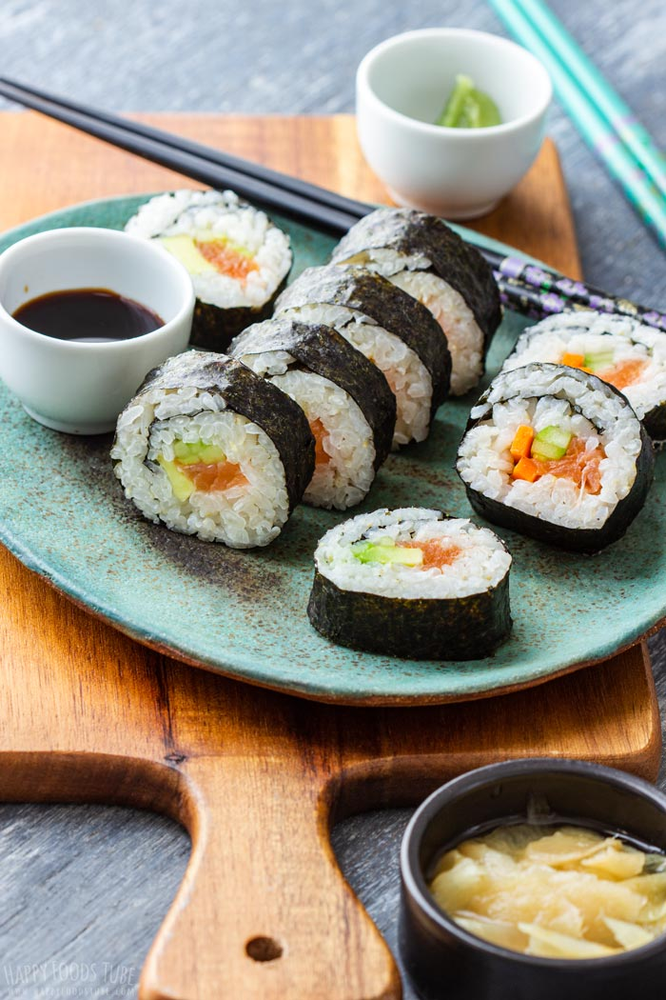

Sushi Recipe

Sushi is a traditional Japanese dish consisting of vinegared rice combined with various ingredients, such as raw fish, vegetables, and seaweed. It is often served with soy sauce, wasabi, and pickled ginger.
Ingredients:
- 2 cups sushi rice
- 2 cups water
- 2 tablespoons rice vinegar
- 1 tablespoon sugar
- 1 teaspoon salt
- 1 pound fresh sushi-grade fish (tuna, salmon, or yellowtail)
- 4 sheets nori (seaweed)
- 1 cucumber, julienned
- 1 avocado, sliced
- Soy sauce for serving
- Wasabi for serving
- Pickled ginger for serving
Steps:
- Rinse the sushi rice under cold water until the water runs clear.
- Cook the rice in a pot with water, vinegar, sugar, and salt according to package instructions.
- Cut the fish into thin slices.
- Prepare the vegetables by julienning the cucumber and slicing the avocado.
- Place a sheet of nori on a bamboo mat.
- Spread a thin layer of cooked rice on the nori, leaving a small border at the top.
- Add the fish slices and vegetables in a line across the center of the rice.
- Carefully roll the nori and rice around the fillings using the bamboo mat.
- Cut the roll into bite-sized pieces with a sharp knife.
Back to Home